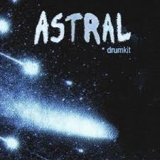
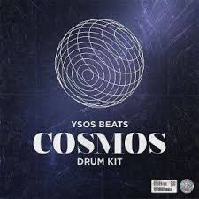
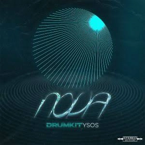
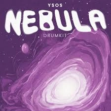

La musique fait partie de ma vie depuis maintenant plus de 10 ans, grâce au piano. C'est avec cet instrument que j'ai découvert le plaisir de jouer, de comprendre les mélodies et de développer mon oreille musicale.
Quelques années plus tard, j'ai découvert le monde de la création musicale grâce aux productions de Darkside8461. Ses morceaux m'ont impressionné et m'ont donné envie de créer, moi aussi, des instrumentales capables de transmettre des émotions.
Par la suite, j'ai découvert Nhezia, avec qui j'ai eu la chance d'échanger sur Instagram, ainsi que MacMuzik. Tous les deux ont énormément nourri ma passion et renforcé mon envie de progresser dans la production musicale.
J'ai ensuite testé plusieurs applications de création musicale avant de découvrir YSOS, qui est rapidement devenu une grande source d'inspiration. Depuis 2020, ses productions et son univers influencent beaucoup ma manière d'aborder la musique.
J'ai commencé à produire sur FL Studio Mobile, ce qui m'a permis d'apprendre les bases de la MAO. Plus tard, j'ai pu passer sur FL Studio PC, qui est aujourd'hui mon principal logiciel de production.
Il y a également quelques années, j'ai créé un compte TikTok afin de partager les musiques que j'apprécie et de faire découvrir les artistes qui m'inspirent au quotidien.
Une découverte qui m'a donné envie de créer.
Un univers qui m'a beaucoup marqué.
Une source d'inspiration musicale.
Une grande influence depuis 2020.
Logiciel de création musicale
Packs utilisés pour mes productions

YSOS Drum Kit astral

YSOS Drum Kit cosmos

YSOS Drum Kit nova

YSOS Drum Kit nebula
Découvrir les différents styles qui m'inspirent.
Un style sombre basé sur des basses puissantes, des flows rapides et une ambiance souvent mélancolique.
Un mélange entre le rap et les rythmes Jersey, caractérisé par des kicks rapides et une énergie dansante.
Un style basé sur les 808, les hi-hats rapides et des ambiances souvent atmosphériques.
Un style moderne avec des synthés agressifs, des mélodies énergiques et une forte influence digitale.